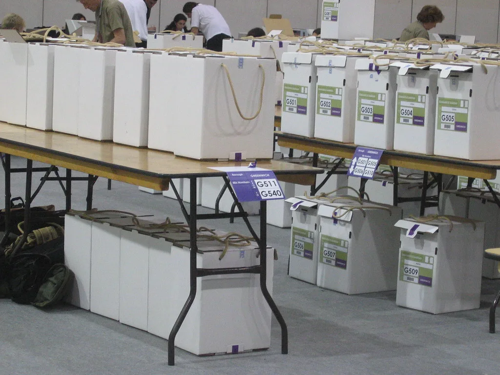
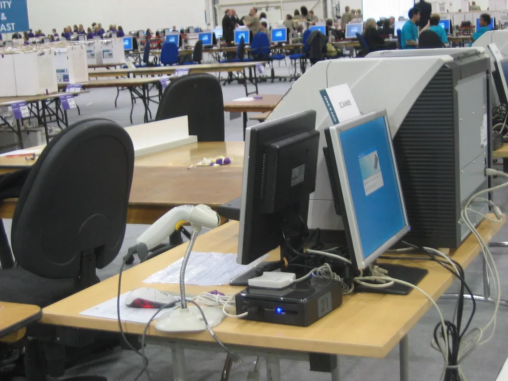

선거를 앞두고 반년 동안 특정 정당이나 후보를 지지하거나 반대하는 문서를 나눠 주지 못하게 했던 옛 공직선거법 조항이 헌법에 어긋난다는 판단이 나왔다. 헌법재판소는 26일 옛 공직선거법 제93조 제1항 가운데 문서의 배부·살포를 금지한 부분과, 이를 어기면 처벌하도록 한 제255조 제2항 제5호의 해당 부분에 대해 재판관 전원일치 의견으로 위헌 결정을 내렸다.
이번 사건은 서울고등법원이 한 선거법 위반 사건의 파기환송심을 심리하던 중 직권으로 위헌법률심판을 제청하면서 헌재에 올라왔다. 재판부가 적용 법조항 자체의 위헌 여부에 의문을 품고 헌재의 판단을 구한 것이다. 문제가 된 조항은 선거일 180일 전부터 선거일까지 선거에 영향을 미치려는 목적으로 정당이나 후보자를 지지·추천하거나 반대하는 내용의 문서를 배부하거나 살포하는 행위를 일률적으로 막아 왔다.

헌재는 이 조항이 표현의 자유를 지나치게 제한한다고 봤다. 결정 요지에 따르면 헌재는 해당 규제가 선거와 관련한 국민의 자유로운 목소리를 "상시적으로 억압하는" 결과를 낳는다고 지적했다. 선거일로부터 반년이라는 긴 기간 동안 유권자 개인이 직접 만든 문서까지 포괄적으로 금지하는 것은, 선거의 공정성을 지킨다는 목적을 감안하더라도 필요한 범위를 넘어선다는 취지다. 선거 기간은 오히려 유권자들의 정치적 의견 교환이 가장 활발해야 할 시기라는 점에서, 이 시기의 표현을 막는 것은 민주주의의 원리와도 충돌한다는 문제의식이 담겼다.
규제를 옹호하는 쪽에서는 경제력이 있는 쪽이 문서를 대량으로 뿌려 여론을 기울게 할 수 있다는 우려를 근거로 들어 왔다. 이에 대해 헌재는 그런 문제는 선거비용 제한과 보전 제도 같은 다른 수단으로도 충분히 막을 수 있다고 설명했다. 표현 자체를 장기간 원천 봉쇄하기보다, 돈의 힘이 선거를 왜곡하는 것을 겨냥한 별도의 장치로 대응하는 편이 기본권 제한을 줄이는 길이라는 판단이다.
헌재가 법률을 바로 효력 상실시키는 단순위헌을 택한 이유도 눈길을 끈다. 이 조항은 2023년 8월 법 개정으로 규제 기간이 선거일 전 180일에서 120일로 줄어든 상태다. 이미 개정돼 앞으로 그대로 적용될 여지가 없는 옛 조항인 만큼, 국회에 개선 시한을 주는 헌법불합치 대신 단순위헌을 선고한 것이다. 따라서 이번 결정이 현행법의 120일 규제까지 위헌이라고 판단한 것은 아니라는 점에 유의할 필요가 있다.

그럼에도 이번 결정의 파장은 작지 않다. 앞서 헌재는 같은 조항 가운데 인쇄물 등 다른 표현 수단을 금지한 부분에 대해서도 헌법불합치 결정을 내린 바 있다. 여기에 문서 부분까지 위헌으로 판단되면서, 옛 조항으로 기소돼 재판을 받고 있거나 처벌을 받은 사람들은 재심이나 무죄 판단을 구할 근거가 생겼다. 현행 120일 규제 역시 같은 논리로 다시 헌법소원의 대상이 될 수 있다는 관측도 나온다.
한편 헌재는 같은 날 시각장애인에게만 안마사 자격을 주는 의료법 조항에 대해서는 합헌 결정을 내렸다. 2008년 이후 여섯 번째 합헌 판단으로, 중도 실명자를 포함한 시각장애인의 생계 보장이라는 공익이 크다는 기존 입장을 재확인했다. 선거 국면에서 유권자의 목소리를 어디까지 보장할지를 두고 국회가 현행 규제의 범위와 기간을 다시 손볼지 주목된다.